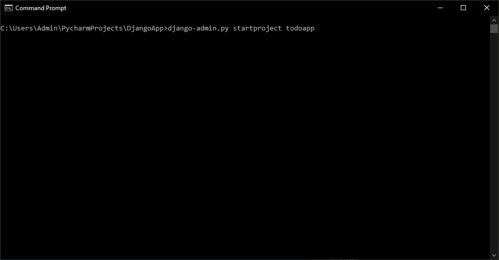
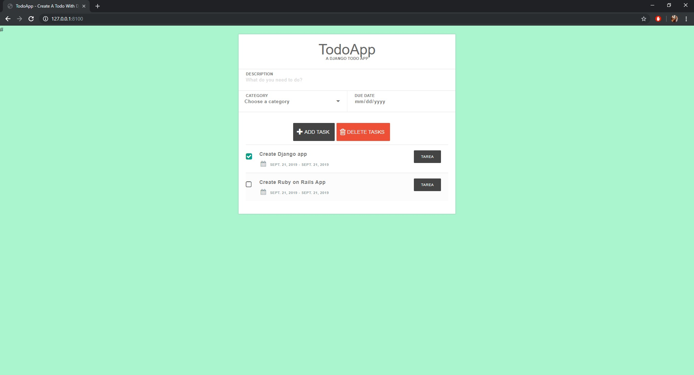

Aplicación Básica en Python con Django
Se trata de una aplicación de TODO es decir una lista de tareas elaborada en Django utilizando el IDE PyCharm como apoyo
La implementación de la aplicación "TODO" consiste en la instalación del framework Django. Django es un framework para la creación de aplicaciones Web que utiliza la arquitectura Model View Controller donde el Modelo representa la estructura de los datos y el programa, la vista representa lo que ve el usuario en la interfaz gráfica y el controlador se hace cargo de los "requests" o pedidos que es lo que hace interacción entre el usuario y la vista y despliega la información necesaria al interactuar entre el usuario y los datos del modelo.
Hay que asegurarnos que tenemos Python instalado corriendo el comando "Python" o "py" '--verison' en una terminal
de otra manera:
También hay que asegurarnos que tenemos PIP instalado, que es nuestro administrador de paquetes que nos permitirá instalar Django
de otra manera:
Después de esto podemos correr el siguiente código: pip install django que instalará django por nosotros.
Podemos ahora continuar a crear nuestro proyecto en PyCharm para el control de nuestros archivos y la edicion del texto.
Hay que especificar la ruta para nuestro proyecto y navegar a ella en la consola para poder crear el proyecto de Django mediante los siguientes comandos:
django-admin.py startproject todoapp

cd todoapp
manage.py startapp todolist
Al regresar a nuestro proyecto de PyCharm podemos ver la siguiente estructura del proyecto:
Una vez creado el proyecto podemos correrlo con el siguiente comando y visitando su URL:
manage.py runserver 8100
http://localhost:8100
Si la instalación funcionó podremos ver el siguiente mensaje:
Ahora hay que agregar nuestra aplicación nueva a la lista de aplicaciones instaladas en el archivo "settings.py":
INSTALLED_APPS = [
'django.contrib.admin',
'django.contrib.auth',
'django.contrib.contenttypes',
'django.contrib.sessions',
'django.contrib.messages',
'django.contrib.staticfiles',
'todoList',
]
Paso siguiente es agregar la ruta a nuestros templates al crear un folder llamado "templates" en el directorio del proyecto y reemplazando en settings el siguiente código:
TEMPLATES = [
{
'BACKEND': 'django.template.backends.django.DjangoTemplates',
'DIRS': [os.path.join(BASE_DIR, "templates")],
'APP_DIRS': True,
'OPTIONS': {
'context_processors': [
'django.template.context_processors.debug',
'django.template.context_processors.request',
'django.contrib.auth.context_processors.auth',
'django.contrib.messages.context_processors.messages',
],
},
},
]
También agregamos las siguientes lineas:
PROJECT_ROOT = os.path.dirname(os.path.abspath(__file__))
STATIC_ROOT = os.path.join(PROJECT_ROOT, 'static')
STATICFILES_STORAGE = 'whitenoise.storage.CompressedManifestStaticFilesStorage'
Finalmente podemos crear nuestra aplicación en models.py que se basa en el siguiente código:
from django.utils import timezone
class Category(models.Model): # The Category table name that inherits models.Model
name = models.CharField(max_length=100) #Like a varchar
class Meta:
verbose_name = ("Category")
verbose_name_plural = ("Categories")
def __str__(self):
return self.name #name to be shown when called
class TodoList(models.Model): #Todolist able name that inherits models.Model
title = models.CharField(max_length=250) # a varchar
content = models.TextField(blank=True) # a text field
created = models.DateField(default=timezone.now().strftime("%Y-%m-%d")) # a date
due_date = models.DateField(default=timezone.now().strftime("%Y-%m-%d")) # a date
category = models.ForeignKey(Category, default="general") # a foreignkey
class Meta:
ordering = ["-created"] #ordering by the created field
def __str__(self):
return self.title #name to be shown when called
Creamos nuestro View:
from django.shortcuts import render,redirect
from .models import TodoList, Category
def index(request): #the index view
todos = TodoList.objects.all() #quering all todos with the object manager
categories = Category.objects.all() #getting all categories with object manager
if request.method == "POST": #checking if the request method is a POST
if "taskAdd" in request.POST: #checking if there is a request to add a todo
title = request.POST["description"] #title
date = str(request.POST["date"]) #date
category = request.POST["category_select"] #category
content = title + " -- " + date + " " + category #content
Todo = TodoList(title=title, content=content, due_date=date, category=Category.objects.get(name=category))
Todo.save() #saving the todo
return redirect("/") #reloading the page
if "taskDelete" in request.POST: #checking if there is a request to delete a todo
checkedlist = request.POST["checkedbox"] #checked todos to be deleted
for todo_id in checkedlist:
todo = TodoList.objects.get(id=int(todo_id)) #getting todo id
todo.delete() #deleting todo
return render(request, "index.html", {"todos": todos, "categories":categories})
Y creamos un index.html para la interfaz
<!DOCTYPE html>
<html >
<head>
<meta charset="UTF-8">
<title>TodoApp - Create A Todo With Django</title>
{% load static %}
<link rel="stylesheet" href="https://maxcdn.bootstrapcdn.com/bootstrap/4.0.0-beta/css/bootstrap.min.css" integrity="sha384-/Y6pD6FV/Vv2HJnA6t+vslU6fwYXjCFtcEpHbNJ0lyAFsXTsjBbfaDjzALeQsN6M" crossorigin="anonymous">
<link rel="stylesheet" type="text/css" href="https://maxcdn.bootstrapcdn.com/font-awesome/4.7.0/css/font-awesome.min.css">
<link rel="stylesheet" type="text/css" href="{% static 'css/style.css' %}">
</head><body>
<div django-app="TaskManager">
<div class="container">
<div class="content">
<h1>TodoApp</h1>
<p class="tagline">a Django todo app</p>
<form action="" method="post">
{% csrf_token %} <!-- csrf token for basic security -->
<div class="inputContainer">
<input type="text" id="description" class="taskName" placeholder="What do you need to do?" name="description" required>
<label for="description">Description</label>
</div>
<div class="inputContainer half last">
<i class="fa fa-caret-down selectArrow"></i>
<select id="category" class="taskCategory" name="category_select">
<option class="disabled" value="">Choose a category</option>
{% for category in categories %}
<option class="" value="{{ category.name }}" name="{{ category.name }}">{{ category.name }}</option>
{% endfor %}
</select>
<label for="category">Category</label>
</div>
<div class="inputContainer half last right">
<input type="date" id="dueDate" class="taskDate" name="date">
<label for="dueDate">Due Date</label>
</div>
<div class="row">
<button class="taskAdd" name="taskAdd" type="submit"><i class="fa fa-plus icon"></i>Add task</button>
<button class="taskDelete" name="taskDelete" formnovalidate="" type="submit" onclick="$('input#sublist').click();"><i class="fa fa-trash-o icon"></i>Delete Tasks</button>
</div> <ul class="taskList">
{% for todo in todos %} <!-- django template lang - for loop -->
<li class="taskItem">
<input type="checkbox" class="taskCheckbox" name="checkedbox" id="{{ todo.id }}" value="{{ todo.id }}">
<label for="{{ todo.id }}"><span class="complete-">{{ todo.title }}</span></label>
<span class="category-{{ todo.category }}">{{ todo.category }}</span>
<strong class="taskDate"><i class="fa fa-calendar"></i>{{ todo.created }} - {{ todo.due_date }}</strong>
</li>
{% endfor %} </ul><!-- taskList -->
</form>
</div><!-- content --> </div><!-- container -->
</div>
<script src="https://ajax.googleapis.com/ajax/libs/jquery/3.2.1/jquery.min.js"></script>
</body>
</html>
En este paso se pueden utilizar los estilos en CSS que se deseen al agregar el folder de Static->styles en la raiz del proyecto o inline en el HTML
Lo último por hacer es administrar nuestros URLs en urls.py:
from django.conf.urls import url
from django.contrib import admin
from todoList.views import index
urlpatterns = [
url(r'^admin/', admin.site.urls),
url(r'^$', index, name="TodoList"),
]
Creamos nuestra cuenta de administrador del siguiente modo:
from . import models
class TodoListAdmin(admin.ModelAdmin):
list_display = ("title", "created", "due_date")
class CategoryAdmin(admin.ModelAdmin):
list_display = ("name",)
admin.site.register(models.TodoList, TodoListAdmin)
admin.site.register(models.Category, CategoryAdmin)
Y corremos el siguiente comando para hacer el setup:
manage.py createsuperuser
Donde introducimos usuario correo y contraseña para poder agregar categorías a nuestra lista
Una vez terminado este proceso podemos repetir los pasos para entrar a nuestra aplicación:
manage.py runserver 8100
Y dirigirnos a la siguiente ruta:
http://localhost:8100/admin
Hacemos login con las credenciales creadas y podemos crear una nueva categoría:
Regresamos a http://localhost:8100 y podemos por fín agregar nuestras tareas a la lista TODO y marcarlas como completadas.

Para correr nuestro programa en un sistema UNIX solo hace falta descargar el programa fuente desde Este Repositorio
Asegurarnos de tener las dependencias adecuadas y correr nuestro servidor de Django
Hay que destacar que la sentencia que nos permite ejecutar este programa en múltiples sistemas operativos (Unix y Windows) es el shebang #! que ponemos en la primer línea de nuestro código fuente:
#!/usr/bin/python
Ésta es la línea que nos va a permitir correr este código en UNIX ya que para crear el ejecutable esta predirectiva le indica al interprete la manera en la que puede transformar el código fuente a un ejecutable adecuado de manera automática
Ésta predirectiva puede tener impacto en Windows cuando existen múltiples interpretes de Python instalados y deseamos seleccionar uno manualmente.